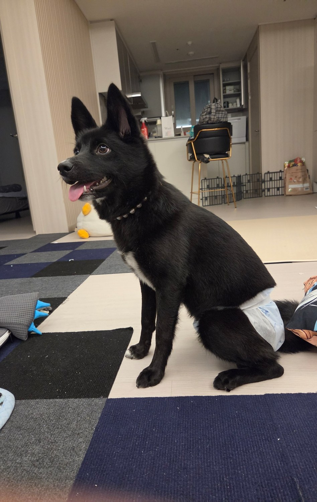
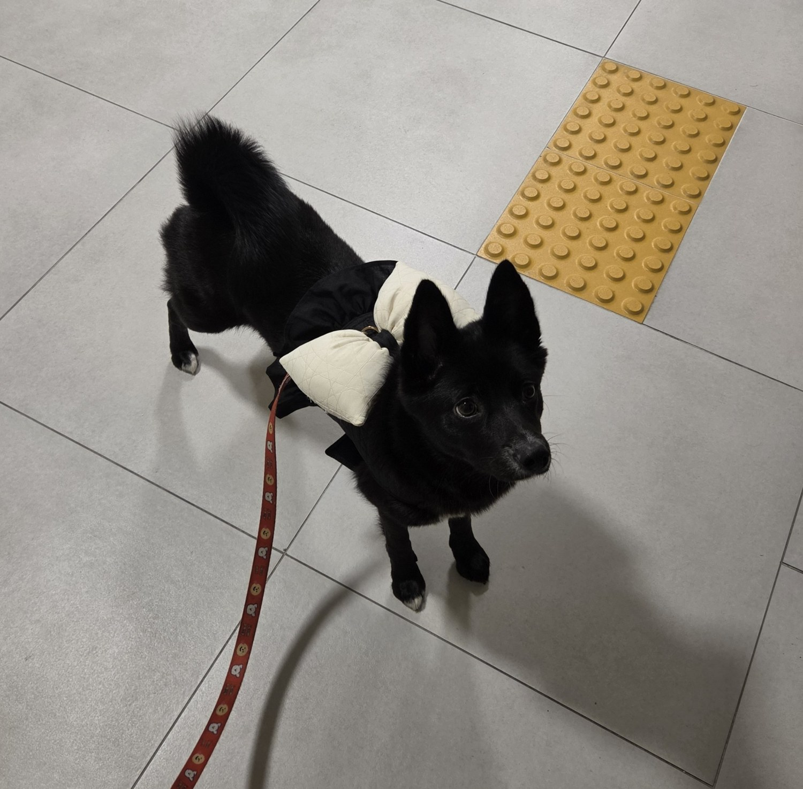
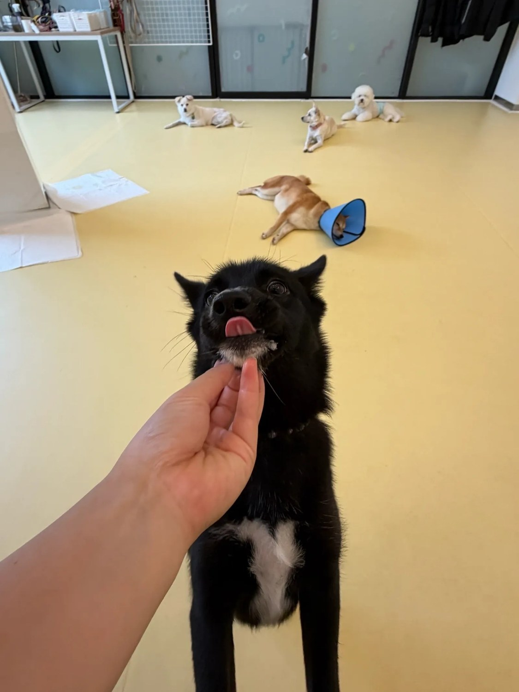

무엇을 전달할까?
브랜드와 대상의 상황을 살피고, 프로젝트가 풀어야 할 질문을 정리합니다.

작업 메이트 🐾
기획의 이유부터, 화면의 디테일까지.
완성작 3건과 지금 만들고
있는 1건을 소개합니다.
팀 작업은 내가 맡은 역할을 따로 소개합니다. 모든 작업은 학생 학습 프로젝트입니다.

메시지를 정리하는 기획.
그 메시지가 보이게 하는 디자인.
광고를 분석하고, 콘텐츠를 제안하고, 캐릭터와 제품의 모습을 화면에 담으며 기획과 디자인의 접점을 탐색하고 있습니다.
팀프로젝트에서는 서로 다른 의견을 모으고, 전달할 메시지와 실행 흐름을 정리했습니다. 개인 작업에서는 형태와 명암, 제품을 보여주는 방식을 실험합니다.
앞으로도 이 질문들을 따라
과정과 배움을 기록하려고 합니다.
브랜드와 대상의 상황을 살피고, 프로젝트가 풀어야 할 질문을 정리합니다.
카피와 콘텐츠의 흐름을 설계하고, 팀원들과 아이디어를 구체화합니다.
화면과 형태로 표현합니다. 만든 이유와 배운 점까지 함께 남깁니다.
다음 작업과 새로운 경험이
차곡차곡 쌓일 공간입니다.
새로운 기획, 디자인, 영상 작업이 이곳에 이어집니다.
지금까지의 작업 둘러보기 ↗앞으로의 도전과 수상 소식을 기록합니다.
취득한 자격과 증빙을 모을 공간입니다.
학교, 전공, 교육과정과 배움을 기록합니다.
공모전, 협업과 새로운 경험을 기록합니다.
화면 밖의 호기심도 소중하게.
이 포트폴리오를 함께 꾸민 나의
검정 강아지입니다.

KEEP YOUR EYES CURIOUS.기획과 디자인을 배우며
새로운 작업과 협업을 기다립니다.